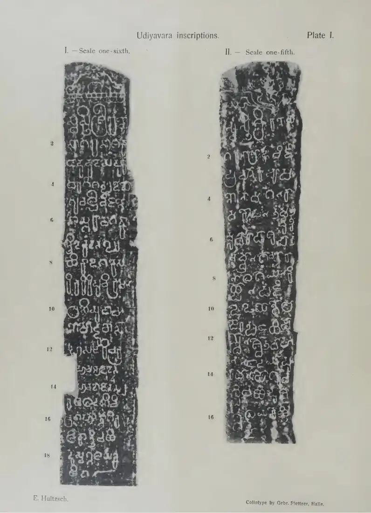
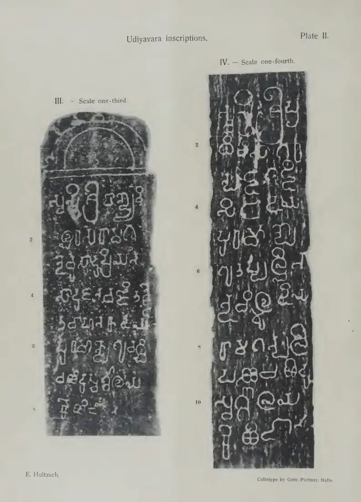
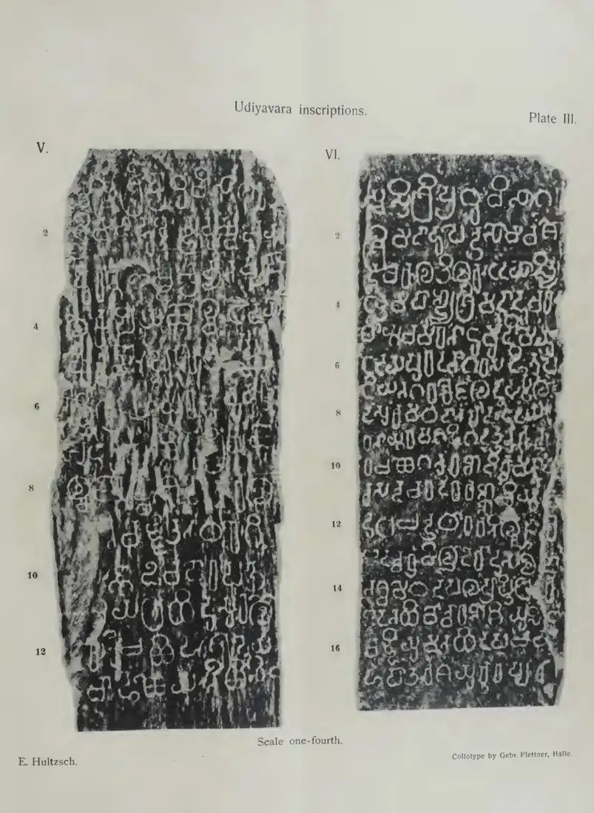

Âljupa inscriptions at Udiyâvara
ALUPA INSCRIPTIONS AT UDIYAVARA.
The ancient royal family of the Âlupas is one of those whose early history is wrapped in obscurity—‘carent quia vate sacro’ as Horace (Carm. IV. 9) expresses it. All that was until recently known regarding them will be found on page 309 of Dr. Fleet’s Dynasties of the Kanarese Districts. A few additional records of them were published by Mr. Rice in his Epigraphia Carnatica. The Âlupas or Âluvas are referred to in inscriptions of the two Western Chalukya kings Pulakêsin II.19 and Vinayâditya, of the Râshṛrakûṭa king Gövinda III.,20 and of the Kâdamba Jayakêsin I., and the poet Bilhaṇa mentions them in connection with his patron Vikramâditya VI. They are thus proved to have existed as a ruling family in the period from the seventh to the eleventh centuries of the Christian era.
As regards the name Âlupa, Dr. Bhandarkar suggested that it ‘seems to be preserved in the name of the modern town of Alupai on the Malabar coast.’21 This is very improbable, because Âluvây (Alwye) is situated in Travancore, while the inscriptions of the Âlupas are
1 Ed. omits this verse.
2 Read -siṅhakarṇṇam.— This word siṅhakarṇṇa apparently is a technical term, relating to architecture.
3 Read -ghaṭitôtpalâ; the preceding saṅdhî for the sake of the metre stands for saṅdhi.
4 Read ddhṛitâ. 5 Metre: Slôka (Anushṭubh). I 6 Observe the hiatus.
7 Read dattvâ. 8 Read ch=ârppitau. 9 Metre: Sragdharâ.
10 Read puratô(?). 11 For the sake of the metre for -vidhûnitâḥ.
12 Wrong for vyômni, which would not have suited the metre.
13 This âstâm is wrongly used here for âsâtâm (from âs) or syâtâm (from as).
14 Metre: Slôka (Anushṭubh). 15 The name of the queen is written here with (the dental) n.
16 Metre: Indravajrâ. 17 Utkṛitâ wrong for utkṛrṇâ.
18 Metre: Mâlinî.— Ed. omits the last Pâda of the verse and has instead of it sa 1699.
19 See now above, Vol. VI. p. 10. 20 See below, p. 16 and note 7.
21 History of the Dekkan, p. 51, note 3.
found in South Canara, Kađûr and Shimoga. The original meaning of the word Ālupa or Āluva is probably 'a ruler,' from the Dravidian root āl, 'to rule.'
A few individual names of kings are preserved to us. The Sorab plates of Vinayâditya were issued at the request of Guṇasâgar-Ālupêndra's son Chitravâha-Mahârâja, who was in possession of the district (vishaya) of Eđevoļal in the N.E. of Banavâsi in North Canara.1 According to the Harihar plates of Vinayâditya, which are dated two years after the Sorab plates, another village in the district (bhôga) of Eđevoļal, forming part of the Vanavâsi-manđala, was granted at the request of Āluvarâja,2 i.e. perhaps Chitravâha-Mahârâja. The same two princes (Guṇasâgara and Chitravâha) may be meant in an inscription at Kigga in the Koppa tâluka of the Kađûr district,3 which states that, when Āluarasa, whose second name was Guṇasâgara, was ruling the Kadamba-manđala,— Āluarasa, (his) great queen and (his son) Chitravâhana made a grant to a local temple.4 Another inscription (Kp. 37), which is on the other face of the same stone, is dated while some Chitravâhana was ruling Ponbuchchu,5 the modern Humcha.6 Finally, an inscription at Mâvaļi in the Sorab tâluka of the Shimoga district states that in the time of Prabhûtavarsha Gôindarasa, i.e. the Râshtrakûta king Gôvinda III., a certain Chitravâhana ruled the Āluvakhêđa six-thousand, while Râjâdityarasa ruled the Banavâsi-manđala.7
If the Chitravâhana of the first Kigga inscription was really the same person as the Chitravâha of the Sorab plates, it would follow that the Ālupa or Ālua prince Guṇasâgara was governor of the Kadamba-manđala, i.e. the Banavâsi province, in or immediately before the time of the Western Chalukya king Vinayâditya, and that Guṇasâgara's son Āluvarâja Chitravâha or Chitravâhana (I). granted two villages in the district of Eđevoļal, which formed part of the Banavâsi province, during Vinayâditya's reign. Consequently Chitravâhana I. seems to have succeeded his father Guṇasâgara in the government of Banavâsi. In the time of Gôvinda III., however, the Banavâsi-manđala had been taken from the Ālupas and was entrusted to Râjâditya, while the Āluvakhêđa six-thousand was administered by a second Chitravâhana, who on the strength of his name may be assumed to have belonged to the Ālupa family. To judge from the Mâvaļi inscription, he proved troublesome and had to be coerced by the force of arms. That Chitravâhana, whom the second Kigga inscription mentions as residing at Humcha, may or not be identical with this Chitravâhana II., but must be distinct from Chitravâhana I., whose capital was most probably Banavâsi. If this identification is correct, Ponbuchchu, the modern Humcha, would have been the head-quarters of the Āluvakhêđa six-thousand, which in a later record is mentioned as Ālvakhêđa among the boundaries of the Poysaļa kingdom.1
Mr. Rice's volumes contain many records of certain later families which seem to be connected with the ancient Ālupas. These are the Chañgâļvas,9 Koñgâļvas,10 Nâđâļvas,11 Sântaras,12 and the rulers of Kaļasa and Kârkaļa.13
In the course of a tour in 1901, Mr. H. Krishna Sastri, B.A., discovered a number of archaic Kanarese pillar inscriptions of the Ālupas at Udiyâvara near Uđipi in the South Canara
1 Ind. Ant. Vol. XIX. p. 147. A facsimile of the Sorab plates has since appeared in Ep. Carn. Vol. VIII. p. 92 of the Translations.
2 Ind. Ant. Vol. VII. p. 302, and Ep. Carn. Vol. XI. Dg. 66. 3 Ep. Carn. Vol. VI. Kp. 38.
4 A further remark on the same inscription will be found below, p. 21, note 3.
5 The Kanarese text has pinduvvâle for Ponbuchch=âle in the Roman text.
6 See p. 17 below.
7 Ep. Carn. Vol. VIII. Sb. 10, with Plate facing p. 3 of the Roman texts.
8 Ep. Carn. Vol. VI. Cm. 160, line 5.
9 Id. Vol. IV. Introduction, p. 16; Vol. V. p. viii; Vol. IX. p. 19.
10 Id. Vol. V. p. vii; Vol. IX. p. 18.
11 Id. Vol. V. p. vii.
12 Id. Vol. VI. p. 10; Vol. VII. p. 17; Vol. VIII. p. 6. Compare Dyn. Kan. Distr. p. 458 and note 2.
13 Ep. Carn. Vol. VI. p. 19. Compare above, Vol. VII. p. 109 ff. and Vol. VIII. p. 124 ff.
Plate 1 is bound after this page.
district. Of these records I now edit the eight most complete and important ones. Regarding some difficult points in them I have consulted my old friends Venkayya and Krishna Sastri, whose remarks proved of much assistance in unravelling the meaning of these enigmatical ancient documents.
The first five Udiyâvara inscriptions are on Vîrakals, i.e. stones set up as memorials of deceased heroes; the remaining three refer to grants of tolls. The three first inscriptions must all belong to the same period; for Nos. I. and II. mention a certain Raṇasâgara, and Nos. II. and III. one Švêtavâhana. These two names and, in addition to them, Chitravâhana in No. I. look like those of Āluva princes, among whom we have already found a Guṇasâgara and two Chitravâhanas. As the alphabet resembles that of the Mâvalî inscription,1 we may identify the Chitravâhana of No. I. with Chitravâhana II., who ruled the Āluvakhéda six-thousand in the time of Gôvinda III. Consequently Nos. I.-III. must be assigned to about A.D. 800. From the first few lines of No. I. we learn that Chitravâhana II. seized Udiyâvara in the course of a war with Raṇasâgara, who seems to have been a rival claimant to the throne. Nos. II. and III. refer to the storming of Udiyâvara by Švêtavâhana, and No. II. records the death, on this occasion, of a follower of Raṇasâgara. From this it may perhaps be concluded that, after the time of the inscription No. I., Raṇasâgara succeeded in ousting Chitravâhana II., but that, later on, he was in his turn defeated by Švêtavâhana, who may have been a near relative of Chitravâhana II.
The remaining Udiyâvara inscriptions date from the reigns of the two Ālupa, Āluva or Ālva kings Pṛithivisâgara (Nos. IV.-VI.) and Vijayāditya (Nos. VII. and VIII.) alias Mâramma (No. VII.). It is impossible to say at present how these two princes were connected with Chitravâhana II., Raṇasâgara and Švêtavâhana. But, as the alphabet of their inscriptions agrees with that of Nos. I.-III., they must be assigned to about the same period.
In each of the eight subjoined inscriptions Udiyâvara is referred to by one of its older names Udayâpura (Nos. V. and VIII.), Udayapura (Nos. II., III., VI., VII.) or Udeyapura (Nos. I. and IV.). In the three last it is mentioned together with Paṭi (No. VI.), Pombułcha (No. VII.) or Ponvułcha (No. VIII.). Paṭi and Pombuchcha are known to have been ancient names of the modern Humcha in the Nagar tâluka of the Shimoga district.2 This Humcha seems to have been the capital of the Ālupa kings. For an inscription at Kigga is dated while Chitravâhana (II.) was ruling Ponbuchchu.3
I.—Inscription of Chitravâhana (II.) and Raṇasâgara.
This inscription (No. 94 of the Government Epigraphist's collection for 1901) is engraved on an octagonal pillar in front of the Śambhukallu temple at Udiyâvara. It records that a follower of Chitravâhana (II.) met with his death when the 'lord of the earth' (viz. Chitravâhana) occupied and entered Udeyapura (Udiyâvara) 'during the trouble of Raṇasâgara,' i.e. in the course of a war with the latter.
TEXT.
- 1 Svastî śrî [||*] Raṇa-
- 2 sâgaranâ śaṅ(saṅ)ka-
- 3 ṭadu|=Udeyapuraṅ
- 4 dhareg[î]śan=pađe-po-
- 5 guvalli Vijaṇa-
- 6 nâygarâ magan=Kâ-
1 See above, p. 16 and note 7.
2 See above, Vol. VIII. p. 126.
3 See p. 16 above.
7 Itide kadan-aggha-
8 li kâlega-kêsa-
9 ri kariripu-vikraman
10 aniyu[!*] dâva-
11 nam=odđuvon=sâ-
12 hasad=ari-chakra-
13 [vyú*]haman=ođedon
14 [â*]havad=ođe[da]n=pa-
15 ra-[ba]lad=añi Chi-
16 travâhanarggâgi ka-
17 li-kânti eri-
18 du svarggâlayakk=ê-
19 řidon [||*]
TRANSLATION.
Hail! Prosperity! When during the trouble of Raṇasâgara1 the lord of the earth2 occupied and entered Udeyapura,— Vijaṇanâyga's3 son Kâltide, (who was) eminent in war, a lion in battle, brave as a lion, applying a cattle-rope4 to the array (of his enemies), breaking the body of bold hostile armies, breaking in battle the array of the enemy's forces, ascended to the abode of heaven, having fought5 (with) the splendour of a hero on account of Chitravâhana.
II.—Inscription of Raṇasâgara and Švêtavâhana.
This inscription (No. 108 of 1901) is engraved on an octagonal pillar lying near a well in the back-yard of Râghavèndrabhaṭta's house at Udiyâvara and commemorates the death in battle of a follower of Raṇasâgara. He fell while Udayapura (Udiyâvara) was entered by Švêtavâhana, whom I take to have been the victorious opponent of Raṇasâgara. The dead warrior is described as a zealous devotee of the 'lord of Paṭti,' and he and his two immediate ancestors as adherents of the 'Pâśupata lord.' Paṭti (or Pombuchcha) is the modern Humcha.6 It may be concluded from the present inscription that this town was the seat of the head of a Śaiva maṭha.
TEXT.
1 Svasti śrí [||*] Raṇa[sâ]-
2 garanâ âlu Viñjan
3 Pra[hâ]rabhûsha-
4 ṇanâ magan Kâ-
5 makôđan tammuttu-
6 mûvarâ Pâśupâ(pa)tain
7 namvrân g=ŷova[do]râ
1 I.e. 'the trouble caused by Raṇasâgara.'
2 Viz. probably the Chitravâhana mentioned in l. 15 f.
3 Nâyga is a tadbhava of nâyaka.
4 With dâvaṇam=odđu compare dâvaṇi kaṭtu, 'to tie cattle in a row to a long rope fastened by two pegs,' in Kittel's Kannađa Dictionary. Compare above, Vol. VIII. p. 134, and Ep. Carn. Vol. VI. Introduction, p. 19, note 1. Dâvaṇi is a tadbhava of dâmant, 'a long rope to which calves are tied by means of shorter ropes' (Monier-Williams).
5 Here and in the four next inscriptions eri is the same as iri, 'to strike, to stab.'
6 See p. 17 above.
7 As suggested to me by Rai Bahadur Venkayya, namvrân is meant for the Tamiñ namhirdêz, 'lord' (literally: 'our lord'); read nambirdâg-u.
Plate 2 is bound after this page.
8 nâlageyan ki(kî)-
9 lpon Patî-
10 ođeyong=lôâ(va)-
11 doran=patî-aî-pâ-
12 yvon Švêtavâha-
13 nan Udayapu-
14 ramân poguva-
15 lli eřidu śva(sva)-
16 rgga(rggâ)layakk=êři-
17 [don] [||*]
TRANSLATION.
Hail! Prosperity! When Švêtavâhana was entering Udayapura,— Ranasâgara's servant, Viñja Prahârabhûshana's son Kâmakôda, who pulled out the tongue of those who were not attached to the Pâšupata lord of those three persons themselves,2 (and) who seized, destroyed and assaulted those who were not attached to the lord of Patîi, ascended to the abode of heaven, having struck down (his enemies).
III.— Inscription of Švêtavâhana.
This inscription (No. 105 of 1901) is engraved on an octagonal pillar in front of the same house as the preceding inscription and commemorates the death of another hero on the same occasion.
TEXT.
1 Svasti śrî [||*] Pândyavi-
2 llarasarâ maga-
3 n=Dêvu sâdu(dhu)-priyan=a-
4 sâdu(dhu)jana-varjitan=Švé-
5 tavâhanar=Udaya-
6 puramân=poguvalli
7 eřidu svarggâlaya-
8 kk=êřidon [||*]
TRANSLATION.
Hail! Prosperity! When Švêtavâhana was entering Udayapura,— Pândyavillarasa's son Dêvu, (who was) beloved by the good (and) shunned by wicked people, ascended to the abode of heaven, having struck down (his enemies).
IV.—Inscription of Prithivisâgara.
This inscription (No. 103 of 1901) is engraved on an octagonal pillar in the south-west corner of the court-yard of the Šambhukallu temple at Udiyâvara. It forms the memorial of a warrior who was killed when Prithivisâgara stormed Udeyapura (Udiyâvara) after his coronation.
TEXT.
1 Svasti śrî [||*] Pri-
2 thivisiâgara-
1 Read odeyong.
2 I.e. the Pâšupata priest whose adherents Kâmakôda, his father Prahârabhûshana (aud his grandfather) Viñja were. I owe this explanation to Dr. Fleet. With tammuttu-mûvar compare tammut-ayvar and tammut-aruvar in Kittel's Kannađa Grammar, p. 241. Dr. Fleet has noted the similar expression tammutt-irbbar or tammutt-irbbor, above, Vol. VI. p. 161, note 7.
3 n=patṭtaṁ gatti-
4 si Ud[e]ya-
5 puramān=po-
6 gutappalli Na-
7 ndavilmuḍiya-
8 râ magan=Pali-
9 paṛe eṛidu
10 svarggálaya-
11 kk=êridon [||*]
TRANSLATION.
Hail! Prosperity! When Pṛithivisâgara, having had (himself) crowned, was entering Udeyapura,— Nandavilmuḍi's son Palipaṛe, having struck down (his enemies), ascended to the abode of heaven.
V.—Inscription of Pṛithivisâgara.
This inscription (No. 101 of 1901) is engraved on an octagonal pillar in the court-yard of the same temple and records that another follower of the Âlupa king Pṛithivisâgara fell at the storming of Udayâpura (Udiyâvara).
TEXT.
1 Svasti śrí [||*] Pṛithu(thi)visâgara
2 śrímad-Âlupêndra dushṭa-bhaya-
3 ôkarargge ishṭa-bhṛityan=appa Po-
4 lokku Priyachelva [U]da[yâ]-
5 puraman pugutappa-
6 lli âha[pa](va)-ra[ñga]du!=uru-
7 bhatara [e]ṛidu Priyache-
8 lva chelva-śanpanna1 ka(kha)la-
9 [ja*]na-varjjitan dharegi(gî)-
10 [śa*]ñge ôvadora pata-
11 [t]iya aṛidu suralô-
12 kakke êridan [||*] Keṛeya
13 Vâ![e]ṛeyan niṛisida [||*]
TRANSLATION.
Hail! Prosperity! When Polokku Priyachelva, who was the beloved servant of Pṛithivisâgara, the glorious Âlupêndra, the terror of the wicked, was entering Udayâpura,— (this) Priyachelva, (who was) endowed with beauty (and) shunned by wicked people, ascended to the world of the gods, having struck down great warriors on the stage of battle (and) having destroyed the foot-soldiers2 of those who were not attached to the lord of the earth.3 (His) friend Vâleṛeya set up (this memorial stone).4
VI.— Inscription of Pṛithivisâgara.
This inscription (No. 102 of 1901) is engraved on another octagonal pillar in the court-yard of the same temple. It opens with the name and birudas of the Âlupa or Âluva king
1 Read -sampanna.
2 As Mr. Krishna Sastri suggests, patati is perhaps a tadbhava, used collectively, of padáti.
4 Viz. the Âlupa king Pṛithivisâgara.
4 Rai Bahadur Venkayya would prefer to take ere as synonymous with the Tamil irai and to translate: “Keṛeya set up (this stone representing) a chief (with) a sword (in his hand).”
Plate 3 is bound after this page.
Prithivisâgara, who claimed descent from the lunar race and bore the surnames Udayâditya and Uttama-Pâṇdya, and records that he confirmed a previous grant of tolls to the two cities (nagara) of Udayapura (Udiyâvara) and Paṭi. The last is evidently the same as Paṭi, the modern Humcha.1 The imprecatory passage at the end of this inscription and of the two next ones (VII. and VIII.) mentions two sacred places : Vâraṇâśi and Śivavaṭli. The former is of course the modern Benares. Regarding the second, Mr. Krishna Sastri contributes the following information :—
“The Shivalli (Śivaṭli) sect of Brâhmaṇas in South Canara take their name from this place. In the Madras Manual of Administration, Vol. III. p. 610, we are told that the town Oodipy (Udipi), ‘considered the most sacred spot in the Canarese country,’ is ‘formed of parts of Badagabett, Moodanidambore, Poollore and Shivully villages.’ In the Madras Postal Directory Shivalli figures as a village served by the Udipi post office.”
TEXT.
- 1 Svasti śrí [||*] Prīdhu(thi)visâgara
- 2 śrímad-Ālupêndra Sômavamśô.
- 3 dbhava kulatilakan Udayâditya
- 4 Uttama-Pâṇdya śrímad-Āluvara[sa]-
- 5 r-B[ô]lygavarmara nâṭu-mudimeyu [l]
- 6 Udayapurada nâ(na)gara-sahitam Pa-
- 7 ṭiya nagarakke jaladu[am sthala[du]-
- 8 lam sumkam=ardha-dâna kâdar [|*] Udaya[pu]-
- 9 ranâygara magan=[S]iṅgadattanu[m] Ku[mâ]-
- 10 ra Eṛeganuṅ Raṇavikrama[nâtha]-
- 11 nu Sandavaradara Kaṇṇachiyu[m] [|*] [I]-
- 12 du a(â)chandrathâ(tâ)rakaṅ nilpu[d=a]ke(kke) [|*]
- 13 Idan=vakram-illâde kâdu sali[po]-
- 14 n=aśvamêdhada pa(pha)la-prâpti aku(kkuṅ) [|*]
- 15 Idan=aṭivon=Vâraṇa(nâ)śiyuṅ Si(śi)va-
- 16 vaṭliyuman=aṭida paṅcha[ma]-
- 17 ha(hâ)pâtaka-śuṅ(saṅ)yuktar=appar [||*]
TRANSLATION.
Hail ! Prosperity ! During Bôygavarma's headmanship of the district,3 Prithivisâgara, the glorious Ālupêndra, who sprang from the race of the Moon, the ornament of (his) family, Udayâditya Uttama-Pâṇdya, the glorious Āluvarasa, confirmed the gift of one half (of) the tolls both on water and on land to the city of Paṭi, together with the city of Udayapura. (The recipients of this gift were)4 Udayapuranâyga's5 son Siṅgadatta, Kumâra Eṛega, Raṇavikrama[nâtha], and Sandavarada's (son) Kaṇṇachi. Let this stand as long as the moon and the stars ! (To) him who without fraud confirms and grants this, shall be the acquisition of the fruit of a horse-sacrifice. He who destroys this, shall be covered with the five great sins (of one) who destroys Vâraṇâśi and Śivavaṭli.
1 See p. 17 above.
2 See Kittel's Kannaṇa Grammar, § 188, 8.
3 As suggested to me by Rai Bahadur Venkayya, nâṭu-mudime is the equivalent of the Tamil nâṭtu mudumai, ‘the headmanship of a district.’ Compare Ep. Carn. Vol. VI. Kp. 38, where Kundavarmmarasaṅ mudime geye (this is the reading of the Text in Kannaṇa characters, p. 323) has to be translated by ‘while Kundavarmarasa was headman.’
4 The words idâ paṇedor may be supplied from VII. l. 10, and VIII. l. 10 f.
5 See above, p. 18, note 3.
VII.—Inscription of Vijayāditya Māramma.
This inscription (No. 98 of 1901) is engraved on two contiguous faces of another octagonal pillar in the court-yard of the same temple. Like the preceding inscription, it confirms a previous grant of tolls to the two cities of Udayapura (Udiyāvara) and Pombułcha (Humcha). The Ālupa or Ālva king who confirmed this grant was called Vijayāditya Māramma. Like the Prīthivisāgara of the preceding inscription, he bore the surname Uttama-Pāṇdya and traced his descent from the lunar race. Besides, he claimed the sovereign titles Paramēsvara and Adhirājarāja.
TEXT.
1 Ôm1 svasti śrī [||*] Vija[y]āditya Ālup-
2 pēndra paramēsva(śva)ra ādhir[â]-2
3 jarājan Uttama-Pāṇdyan-Śô(sô)mavamśô-
4 dbhava śrī-Māramm-Ālvarasar [U]3
5 Udayapurada naka(ga)ra-sahitam Pombu-
6 łchada naka(ga)rakke suńka kādudu sańku-
7 rakke [pu]tțige ondare małavege pa-
8 łti padinârū palam adakeya pē-
9 řinga(úge) mûn[û]rū vełasina pêřinge
10 padina(nâ)rū pala[m] [|*] Idâ pađedor Su-
11 sēnavadiyara Svarṇṇagôsasi Mutta-
12 varara Ađiyapasetțiyu Manđukara
13 Parasėbyan Sēnavadiyara Nagakumāran [|*]
14 Idu a(â)chandratāraka[m] nilpud=akke [|*] Ida kâdo
15 atțaguna asva(śva)mėda(dha)da pa(pha)lam=akke [|*]
16 Idan=aļido B[â]raṇāsiyu Šivavaļliyu-
17 ma aļida pañchamaha(hâ)pâtakan=ak[u](kkum) [|*]
18 Raṇadhâri-likhita ||4
TRANSLATION.
Ôm. Hail ! Prosperity ! Vijayāditya Ālupēndra Paramēsvara Adhirājarāja Uttama-Pāṇdya, who sprang from the race of the Moon, the glorious Māramm-Ālvarasa, confirmed the tolls (due) to the city of Pombułcha together with the city of Udayapura, (viz.) per double bag (of grain),5 one and a half basket6 (of grain); per małave7 (of cotton), sixteen pala (of cotton; per load of areca-nuts, three hundred (nuts); (and) per load of pepper,8 sixteen pala (of pepper). They who obtained this (were) Susēnavadi's (son) Svarṇṇagôsasi,9 Muttavara's (son) Ađiyapasetți, Manđuka's (son) Parasėbya, (and) Sēnavadi's (son) Nagakumāra. Let this stand as long as the moon and the stars! (To) him who confirms this, let there be the eightfold fruit of a horse-sacrifice! (To) him who destroys this, shall be the five great sins (of one) who destroys Bāraṇāsi and Šivavaļli. Written by Raṇadhâri.
1 Expressed by a symbol.
2 Read adhirā-.
3 Corrected from a. The engraver has for the sake of clearness repeated the u at the beginning of the next line.
4 In the original the final stop is represented by a four-petalled flower.
5 Sańkura is perhaps the same as sańkara No. 4 in Kittel's Kannađa Dictionary: 'a double sack for manure and grain to be carried on the back of a bullock.'
6 Putțige is the same as putți, 'a basket.'
7 Mr. Krishna Sastri suggests that this may be another form of maṇa or maṇaru, 'a maund.'
8 Originally I had taken rełasu for bęłasu, 'corn.' But as the toll was not levied by measure, but by weight, I adopt Mr. Krishna Sastri's suggestion, who compares mełasu, 'black pepper.'
9 With gdsasi compare gósdsiga in the inscription VIII. 1. 11, and Dr. Fleet's remarks, above, Vol. VI. p. 255, note 2.
VIII.—Inscription of Vijayāditya.
This inscription (No. 97 of 1901) is found on the same pillar as the preceding one (VII.). It is engraved on the same two contiguous faces as VII., but begins at the opposite end of the pillar, which must have been placed upside down when the new inscription (VIII.) was incised on it. A third face of the pillar bears six lines of writing (15-20) which appear to be connected with VIII. This circumstance enables us to conclude that VIII. was engraved at a later date than VII. When the writer of VIII. had reached line 14, he was confronted with the end of the inscription VII., and was therefore obliged to finish his copy on another face of the pillar.
The contents of VIII. resemble those of VII. The king is the same; only one of his names, Máramma, is omitted here. He is stated to have confirmed the same grant of tolls to the two cities of Udayápura (Udiyávara) and Ponvułcha (Humcha). But the names of the local representatives receiving the grant differ from those in VII. This shows that some time must have elapsed between the incision of both records, although both belong to the same reigu.
TEXT.
First and Second Faces.
- 1 Svasti śrí [||*] Vijayādhi(di)tyan
- 2 Ālupēndra paramēsva(śva)ra â(a)-
- 3 dhí(dhi)rájarájan Uttama-
- 4 Pâṇdyan=Sômavañsôbhavan1
- 5 Āluvarasar Arakellarâ
- 6 nâṭu-mudí(di)meyu! Udayâ-
- 7 purada naka(ga)ra-sahitam Ponvułcha-
- 8 da naka(ga)rakke suñkadâ ardda(rddha)-[dâ]na
- 9 ká[daha] avargge attaguna
- 10 asva(śva)mêda(dha)dâ pa(pha)lam=akkum[*] Idâ
- 11 [pa*]đedor Muttavurera2 Saruvigôsâsiga
- 12 Kođalseṭtiyarâ Madâmman Vija[s]e-
- 13 ṭṭigarâ Dharmmanâygan=Maṇugasâ-
- 14 ttavar Sarvvavandu Puleyarmman [|*]
Third Face.
TRANSLATION.
Hail! Prosperity! The eightfold fruit of a horse-sacrifice shall be to him—Vijayāditya Ālupēndra Paramēsvara Adhirájarája Uttama-Pâṇdya, who sprang from the race of the Moon, Āluvarasa—who, during Arakella's headmanship of the district,5 confirmed the gift of
1 Read =Sômavañsôbhavan.
2 Read Muttavarara, as in VII. l. 11 f.
3 Read Śivavaļļiyuñ.
4 The u of kkuñ is expressed by two different symbols behind and below the kk.
5 See above, p. 21, note 3.
one half of the tolls to the city of Ponvulcha together with the city of Udayâpura. They who obtained this (were) Muttavara's (son) Sâruvigôsâsiga, Koðalsetti's (son) Madâmma, Vijasetti's (son) Dharmanâyga,1 Maṇugasâttava, Sarvavandu2 (and) Puleyarma. These ryots obtained (it). (To) him who destroys this, shall be the five great sins (of one) who destroys Śivava!li and Vârânâsi.
1 See above, p. 18, note 3.
2 I.e. Sarvabandhu.


